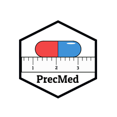

Extract CATE scores and score coefficients
Source:R/catefit-extract.R
catefit-extract.RdExtract scores for the original analysis data, coefficients, and, where
available, confidence intervals for score coefficients from a catefit.
Arguments
- object
An object of class
catefit.- newdata
New data are not currently supported; omit this argument to retrieve scores for the original analysis sample in its original order.
- method
A single scoring method used to fit the object, such as
"contrastReg". Forpredict(), it may be omitted if exactly one method is available. Forcoef(), omission returns the stored coefficient table. Forconfint(), the default is"contrastReg".- ...
Additional arguments; currently unused.
- parm
Coefficient names or positions; omitted selects all coefficients.
- level
Confidence level between 0 and 1; defaults to 0.95.
Value
predict() returns a numeric vector of stored scores.
coef() returns the stored coefficient table or a named numeric vector
for a selected method. confint() returns a matrix of Wald confidence
limits for the selected coefficients.
Details
Scores for count and survival outcomes are on the log ratio scale; binary scores are on the risk-difference scale. They describe fitted scores, not validated individual treatment effects. Confidence intervals require stored coefficient standard errors, currently available for contrast regression in count and continuous fits only. They are not available for survival or binary fits. Methods that do not fit linear scores, such as random forests and boosting, do not provide score coefficients.